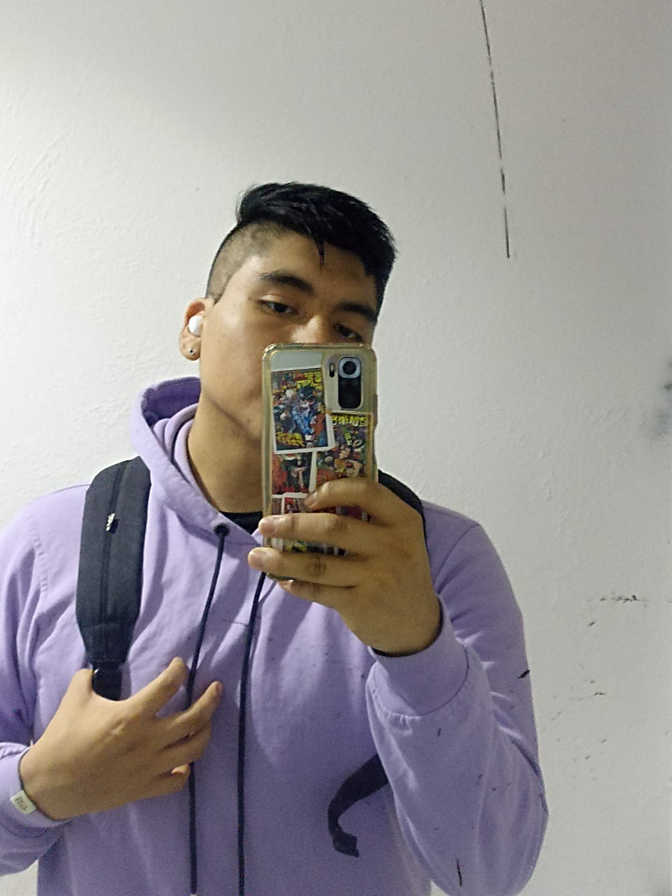
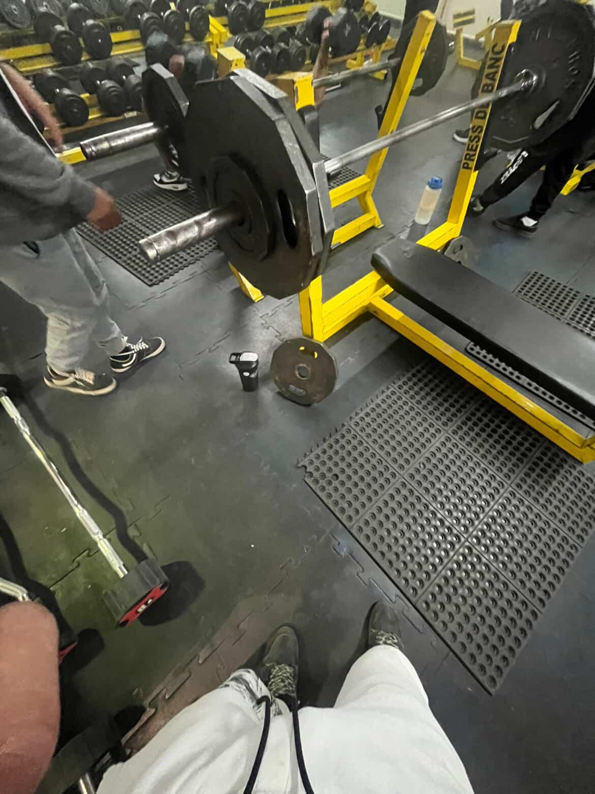
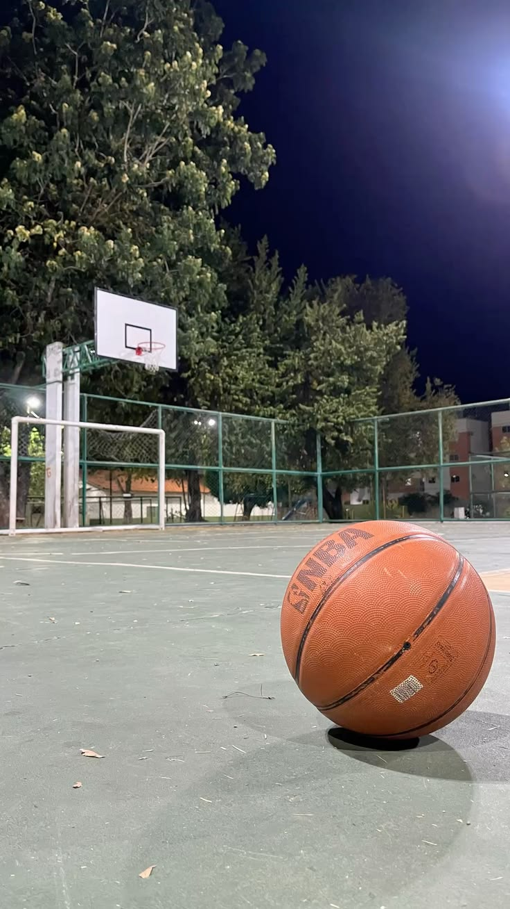

Desarrollo Web & Ciberseguridad
Hola soy Alexis tengo 22 años estudio en ESCOM (ISC), me gusta el desarrollo web y también lo que tenga que ver con la ciberseguridad. Me gusta ver peliculas, me considero cinefilo, también me gusta ver anime, jugar basketbol e ir al gimnasio.

Desarrollo de software con implementación de módulos estadísticos, actualizaciones de búsqueda y parches de base de datos, contando con un sistema de IA predictivo para mayor ganancias del negocio.
Desarrollo de app web y movil para el control de laboratorio quimico y creación de ejercicios ludicos para mayor aprendizaje.

Mantengo una rutina regular de entrenamiento y disciplina para mi salud física y mental.

Deporte que sigo y practico desde la infancia, un gusto por el juego que solía ver y compartir con mi papá.
Me encantan los videojuegos en especial aquellos que son de peleas y paltaformas son mis favoritos.
En 1586, María Estuardo, reina de Escocia, usó un cifrado de sustitución para conspirar contra Isabel I. El criptoanalista Thomas Phelippes interceptó la carta, la descifró y falsificó una posdata en el mismo código pidiendo los nombres de los cómplices. Este "hackeo" del siglo XVI llevó a María directamente a la guillotina.
Aunque se le conoce por otros temas, el antiguo texto hindú del Kamasutra recomienda el estudio de la criptografía (mlecchita-vikalpa) como una de las 64 artes esenciales que debían aprenderse, específicamente para que los amantes pudieran enviarse cartas ocultando el mensaje de miradas indiscretas.
Antes de las computadoras, los espartanos usaban una vara de madera (Escítala) para enrollar cuero y ocultar mensajes, mientras que Julio César simplemente recorría el alfabeto. Este video ilustra cómo nacieron estas técnicas clásicas.